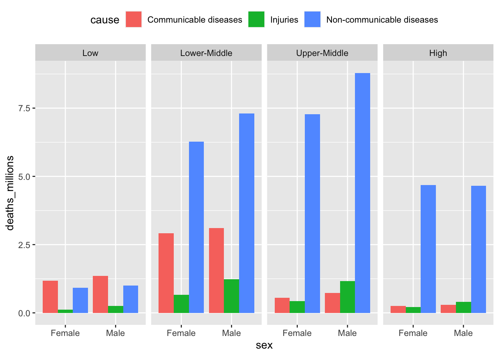

── Attaching core tidyverse packages ──────────────────────── tidyverse 2.0.0 ──
✔ dplyr 1.1.2 ✔ readr 2.1.4
✔ forcats 1.0.0 ✔ stringr 1.5.0
✔ ggplot2 3.4.3 ✔ tibble 3.2.1
✔ lubridate 1.9.2 ✔ tidyr 1.3.0
✔ purrr 1.0.1
── Conflicts ────────────────────────────────────────── tidyverse_conflicts() ──
✖ dplyr::filter() masks stats::filter()
✖ dplyr::lag() masks stats::lag()
ℹ Use the conflicted package (<http://conflicted.r-lib.org/>) to force all conflicts to become errorsData wrangling with R
This code is based on the original work from HealthyR and has been adapted by Laura Bravo
Tidyverse packages: ggplot2, dplyr, tidyr, etc.
Most of the functions introduced in this session come from the tidyverse family, rather than Base R. Including library(tidyverse) in your script loads a list of packages: ggplot2, dplyr, tidyr, forcats, etc.
In this session we will get to know key functions to work with data:
- summarise data using:
group_by(),summarise(), andmutate(); - reshape data between the wide and long formats:
pivot_wider()andpivot_longer(); -
select()columns andarrange()(sort) rows.
Data
We are using a condensed version of the Global Burden of Disease Data dataset.
#Can load the dataset through many ways but quickest and one i always resort to, is data.table function
library(data.table)
Attaching package: 'data.table'The following objects are masked from 'package:lubridate':
hour, isoweek, mday, minute, month, quarter, second, wday, week,
yday, yearThe following objects are masked from 'package:dplyr':
between, first, lastThe following object is masked from 'package:purrr':
transposegbd_full <- fread("global_burden_disease_cause-year-sex-income.csv") #add your working directoryhead(gbd_full) cause year sex income deaths_millions
1: Communicable diseases 1990 Female High 0.21
2: Communicable diseases 1990 Female Upper-Middle 1.15
3: Communicable diseases 1990 Female Lower-Middle 4.43
4: Communicable diseases 1990 Female Low 1.51
5: Communicable diseases 1990 Male High 0.26
6: Communicable diseases 1990 Male Upper-Middle 1.35Plot the data
The best way to investigate a dataset is to plot it (do not worry if do not understand the code, will do a separate exercise on plotting later)
gbd2017 %>%
# without the mutate(... = fct_relevel())
# the panels get ordered alphabetically
mutate(income = fct_relevel(income,
"Low",
"Lower-Middle",
"Upper-Middle",
"High")) %>%
# defining the variables using ggplot(aes(...)):
ggplot(aes(x = sex, y = deaths_millions, fill = cause)) +
# type of geom to be used: column (that's a type of barplot):
geom_col(position = "dodge") +
# facets for the income groups:
facet_wrap(~income, ncol = 4) +
# move the legend to the top of the plot (default is "right"):
theme(legend.position = "top")
Aggregating: group_by(), summarise()
Health data analysis is frequently concerned with making comparisons between groups. Groups of genes, or diseases, or patients, or populations, etc. An easy approach to the comparison of data by a categorical grouping is therefore essential.
We will introduce flexible functions from tidyverse that you can apply in any setting.
To quickly calculate the total number of deaths in 2017, we can select the column and send it into the sum() function:
But a much cleverer way of summarising data is using the summarise() function:
sum() is a function that adds numbers together, whereas summarise() is an efficient way of creating summarised dataframes. The main strength of summarise() is how it works with the group_by() function. group_by() and summarise() are a perfect complement for each other and used togetehr most of the time.
We use group_by() to tell summarise() which subgroups to apply the calculations on. In the above example, without group_by(), summarise just works on the whole dataset, yielding the same result as just sending a single column into the sum() function.
We can subset on the cause variable using group_by():
# A tibble: 3 × 2
cause `sum(deaths_millions)`
<chr> <dbl>
1 Communicable diseases 10.4
2 Injuries 4.47
3 Non-communicable diseases 40.9 Furthermore, group_by() is happy to accept multiple grouping variables. So by just copying and editing the above code, we can quickly get summarised totals across multiple grouping variables (by just adding sex inside the group_by() after cause):
`summarise()` has grouped output by 'cause'. You can override using the
`.groups` argument.# A tibble: 6 × 3
# Groups: cause [3]
cause sex `sum(deaths_millions)`
<chr> <chr> <dbl>
1 Communicable diseases Female 4.91
2 Communicable diseases Male 5.47
3 Injuries Female 1.42
4 Injuries Male 3.05
5 Non-communicable diseases Female 19.2
6 Non-communicable diseases Male 21.7 Add new columns: mutate()
Let’s first give the summarised column a better name, e.g., deaths_per_group. We can remove groupings by using ungroup(). This is important to remember if you want to manipulate the dataset in its original format. We can combine ungroup() with mutate() to add a total deaths column, which will be used below to calculate a percentage:
gbd2017 %>%
group_by(cause, sex) %>%
summarise(deaths_per_group = sum(deaths_millions)) %>%
ungroup() %>%
mutate(deaths_total = sum(deaths_per_group))`summarise()` has grouped output by 'cause'. You can override using the
`.groups` argument.# A tibble: 6 × 4
cause sex deaths_per_group deaths_total
<chr> <chr> <dbl> <dbl>
1 Communicable diseases Female 4.91 55.7
2 Communicable diseases Male 5.47 55.7
3 Injuries Female 1.42 55.7
4 Injuries Male 3.05 55.7
5 Non-communicable diseases Female 19.2 55.7
6 Non-communicable diseases Male 21.7 55.7So summarise() condenses a dataframe, whereas mutate() retains its current size and adds columns.
Percentages formatting: percent()
We can also add further lines to mutate() to calculate the percentage of each group:
# percent() function for formatting percentages come from library(scales)
library(scales)
gbd2017_summarised <- gbd2017 %>%
group_by(cause, sex) %>%
summarise(deaths_per_group = sum(deaths_millions)) %>%
ungroup() %>%
mutate(deaths_total = sum(deaths_per_group),
deaths_relative = deaths_per_group/deaths_total)
gbd2017_summarised# A tibble: 6 × 5
cause sex deaths_per_group deaths_total deaths_relative
<chr> <chr> <dbl> <dbl> <dbl>
1 Communicable diseases Female 4.91 55.7 0.0881
2 Communicable diseases Male 5.47 55.7 0.0981
3 Injuries Female 1.42 55.7 0.0255
4 Injuries Male 3.05 55.7 0.0547
5 Non-communicable diseases Female 19.2 55.7 0.344
6 Non-communicable diseases Male 21.7 55.7 0.390
summarise() vs mutate()
So far we’ve shown you examples of using summarise() on grouped data (following group_by()) and mutate() on the whole dataset (without using group_by()).
But here’s the thing: mutate() is also happy to work on grouped data.
Let’s save the aggregated example from above in a new dataframe. We will then sort the rows using arrange() based on sex, just for easier viewing (it was previously sorted by cause).
The arrange() function sorts the rows within a tibble:
gbd_summarised <- gbd2017 %>%
group_by(cause, sex) %>%
summarise(deaths_per_group = sum(deaths_millions)) %>%
arrange(sex)`summarise()` has grouped output by 'cause'. You can override using the
`.groups` argument.gbd_summarised# A tibble: 6 × 3
# Groups: cause [3]
cause sex deaths_per_group
<chr> <chr> <dbl>
1 Communicable diseases Female 4.91
2 Injuries Female 1.42
3 Non-communicable diseases Female 19.2
4 Communicable diseases Male 5.47
5 Injuries Male 3.05
6 Non-communicable diseases Male 21.7 You should also notice that summarise() drops all variables that are not listed in group_by() or created inside it. So year, income, and deaths_millions exist in gbd2017, but they do not exist in gbd_summarised.
We now want to calculate the percentage of deaths from each cause for each gender. We could use summarise() to calculate the totals:
gbd_summarised_sex <- gbd_summarised %>%
group_by(sex) %>%
summarise(deaths_per_sex = sum(deaths_per_group))
gbd_summarised_sex# A tibble: 2 × 2
sex deaths_per_sex
<chr> <dbl>
1 Female 25.5
2 Male 30.3But that drops the cause and deaths_per_group columns. One way would be to now use a join on gbd_summarised and gbd_summarised_sex:
full_join(gbd_summarised, gbd_summarised_sex)Joining with `by = join_by(sex)`# A tibble: 6 × 4
# Groups: cause [3]
cause sex deaths_per_group deaths_per_sex
<chr> <chr> <dbl> <dbl>
1 Communicable diseases Female 4.91 25.5
2 Injuries Female 1.42 25.5
3 Non-communicable diseases Female 19.2 25.5
4 Communicable diseases Male 5.47 30.3
5 Injuries Male 3.05 30.3
6 Non-communicable diseases Male 21.7 30.3Joining different summaries together can be useful, especially if the individual pipelines are quite long (e.g., over 5 lines of %>%). However, it does increase the chance of mistakes creeping in and is best avoided if possible.
An alternative is to use mutate() with group_by() to achieve the same result as the full_join() above:
# A tibble: 6 × 4
# Groups: sex [2]
cause sex deaths_per_group deaths_per_sex
<chr> <chr> <dbl> <dbl>
1 Communicable diseases Female 4.91 25.5
2 Injuries Female 1.42 25.5
3 Non-communicable diseases Female 19.2 25.5
4 Communicable diseases Male 5.47 30.3
5 Injuries Male 3.05 30.3
6 Non-communicable diseases Male 21.7 30.3So mutate() calculates the sums within each grouping variable (in this example just group_by(sex)) and puts the results in a new column without condensing the tibble down or removing any of the existing columns.
Let’s combine all of this together into a single pipeline and calculate the percentages per cause for each gender:
gbd2017 %>%
group_by(cause, sex) %>%
summarise(deaths_per_group = sum(deaths_millions)) %>%
group_by(sex) %>%
mutate(deaths_per_sex = sum(deaths_per_group),
sex_cause_perc = percent(deaths_per_group/deaths_per_sex)) %>%
arrange(sex, deaths_per_group)`summarise()` has grouped output by 'cause'. You can override using the
`.groups` argument.# A tibble: 6 × 5
# Groups: sex [2]
cause sex deaths_per_group deaths_per_sex sex_cause_perc
<chr> <chr> <dbl> <dbl> <chr>
1 Injuries Fema… 1.42 25.5 6%
2 Communicable diseases Fema… 4.91 25.5 19%
3 Non-communicable diseases Fema… 19.2 25.5 75%
4 Injuries Male 3.05 30.3 10.1%
5 Communicable diseases Male 5.47 30.3 18.1%
6 Non-communicable diseases Male 21.7 30.3 71.8% Common arithmetic functions - sum(), mean(), median(), etc.
Statistics is an R strength, so if there is an arithmetic function you can think of, it probably exists in R.
The most common ones are:
An import thing to remember relates to missing data: if any of your values is NA (not available; missing), these functions will return an NA. Either deal with your missing values beforehand (recommended) or add the na.rm = TRUE argument into any of the functions to ask R to ignore missing values.
select() columns
The select() function can be used to choose, rename, or reorder columns of a tibble.
For the following select() examples, let’s create a new tibble called gbd_2rows by taking the first 2 rows of gbd_full (just for shorter printing):
cause year sex income deaths_millions
1: Communicable diseases 1990 Female High 0.21
2: Communicable diseases 1990 Female Upper-Middle 1.15Let’s select() two of these columns:
cause deaths_millions
1: Communicable diseases 0.21
2: Communicable diseases 1.15We can also use select() to rename the columns we are choosing:
cause deaths
1: Communicable diseases 0.21
2: Communicable diseases 1.15The function rename() is similar to select(), but it keeps all variables whereas select() only kept the ones we mentioned:
cause year sex income deaths
1: Communicable diseases 1990 Female High 0.21
2: Communicable diseases 1990 Female Upper-Middle 1.15select() can also be used to reorder the columns in your tibble. Moving columns around is not relevant in data analysis (as any of the functions we showed you above, as well as plotting, only look at the column names, and not their positions in the tibble), but it is useful for organising your tibble for easier viewing.
So if we use select like this:
year sex income cause deaths_millions
1: 1990 Female High Communicable diseases 0.21
2: 1990 Female Upper-Middle Communicable diseases 1.15The columns are reordered.
If you want to move specific column(s) to the front of the tibble, do:
gbd_2rows %>%
select(year, sex, everything()) year sex cause income deaths_millions
1: 1990 Female Communicable diseases High 0.21
2: 1990 Female Communicable diseases Upper-Middle 1.15And this is where the true power of select() starts to come out. In addition to listing the columns explicitly (e.g., mydata %>% select(year, cause...)) there are several special functions that can be used inside select(). These special functions are called select helpers, and the first select helper we used is everything().
The most common select helpers are starts_with(), ends_with(), contains(), matches() (but there are several others that may be useful to you, so press F1 on select() for a full list, or search the web for more examples).
Let’s say you can’t remember whether the deaths column was called deaths_millions or just deaths or deaths_mil, or maybe there are other columns that include the word “deaths” that you want to select():
gbd_2rows %>%
select(starts_with("deaths")) deaths_millions
1: 0.21
2: 1.15Note how “deaths” needs to be quoted inside starts_with() - as it’s a word to look for, not the real name of a column/variable.
Reshaping data - long vs wide format
So far, all of the examples we’ve shown you have been using ‘tidy’ data. Data is ‘tidy’ when it follows a couple of rules: each variable is in its own column, and each observation is in its own row. Making data ‘tidy’ often means transforming the table from a “wide” format into a “long” format. Long format is efficient to use in data analysis and visualisation and can also be considered “computer readable”.
But sometimes when presenting data in tables for humans to read, or when collecting data directly into a spreadsheet, it can be convenient to have data in a wide format. Data is ‘wide’ when some or all of the columns are levels of a factor. An example makes this easier to see.
head(gbd_wide)# A tibble: 3 × 5
cause Female_1990 Female_2017 Male_1990 Male_2017
<chr> <dbl> <dbl> <dbl> <dbl>
1 Communicable diseases 7.3 4.91 8.06 5.47
2 Injuries 1.41 1.42 2.84 3.05
3 Non-communicable diseases 12.8 19.2 13.9 21.7 head(gbd_long)# A tibble: 6 × 4
cause year sex deaths_millions
<chr> <dbl> <chr> <dbl>
1 Communicable diseases 1990 Female 7.3
2 Communicable diseases 2017 Female 4.91
3 Communicable diseases 1990 Male 8.06
4 Communicable diseases 2017 Male 5.47
5 Injuries 1990 Female 1.41
6 Injuries 2017 Female 1.42These tables contain the exact same information, but in long (tidy) and wide formats, respectively.
Pivot values from rows into columns (wider)
If we want to take the long data and put some of the numbers next to each other for easier visualisation, then pivot_wider() from the tidyr package is the function to do it. It means we want to send a variable into columns, and it needs just two arguments: the variable we want to become the new columns, and the variable where the values currently are.
gbd_long %>%
pivot_wider(names_from = year, values_from = deaths_millions)# A tibble: 6 × 4
cause sex `1990` `2017`
<chr> <chr> <dbl> <dbl>
1 Communicable diseases Female 7.3 4.91
2 Communicable diseases Male 8.06 5.47
3 Injuries Female 1.41 1.42
4 Injuries Male 2.84 3.05
5 Non-communicable diseases Female 12.8 19.2
6 Non-communicable diseases Male 13.9 21.7 This means we can quickly eyeball how the number of deaths has changed from 1990 to 2017 for each cause category and sex. Whereas if we wanted to quickly look at the difference in the number of deaths for females and males, we can change the names_from = argument from = years to = sex. Furthermore, we can also add a mutate() to calculate the difference:
gbd_long %>%
pivot_wider(names_from = sex, values_from = deaths_millions) %>%
mutate(Male - Female)# A tibble: 6 × 5
cause year Female Male `Male - Female`
<chr> <dbl> <dbl> <dbl> <dbl>
1 Communicable diseases 1990 7.3 8.06 0.760
2 Communicable diseases 2017 4.91 5.47 0.560
3 Injuries 1990 1.41 2.84 1.43
4 Injuries 2017 1.42 3.05 1.63
5 Non-communicable diseases 1990 12.8 13.9 1.11
6 Non-communicable diseases 2017 19.2 21.7 2.59 All of these differences are positive which means every year, more men die than women. Which make sense, as more boys are born than girls.
And what if we want to look at both year and sex at the same time? No problem, pivot_wider() can deal with multiple variables at the same time, names_from = c(sex, year):
gbd_long %>%
pivot_wider(names_from = c(sex, year), values_from = deaths_millions)# A tibble: 3 × 5
cause Female_1990 Female_2017 Male_1990 Male_2017
<chr> <dbl> <dbl> <dbl> <dbl>
1 Communicable diseases 7.3 4.91 8.06 5.47
2 Injuries 1.41 1.42 2.84 3.05
3 Non-communicable diseases 12.8 19.2 13.9 21.7 pivot_wider() has a few optional arguments that may be useful for you. For example, pivot_wider(..., values_fill = 0) can be used to fill empty cases (if you have any) with a value you specified. Or pivot_wider(..., names_sep = ": ") can be used to change the separator that gets put between the values (e.g., you may want “Female: 1990” instead of the default “Female_1990”). Remember that pressing F1 when your cursor is on a function opens it up in the Help tab where these extra options are listed.
Pivot values from columns to rows (longer)
The inverse of pivot_wider() is pivot_longer(). If you’re lucky enough, your data comes from a proper database and is already in the long and tidy format. But if not you’ll need to know how to wrangle the variables currently spread across different columns into the tidy format (where each column is a variable, each row is an observation).
pivot_longer() can be a little bit more difficult to use as you need to describe all the columns to be collected using a select_helper. Run `?select_helpers and click on the first result in the Help tab for a reminder.
For example, here we want to collect all the columns that include the words Female or Male, the select helper for it is matches("Female|Male"):
gbd_wide %>%
pivot_longer(matches("Female|Male"),
names_to = "sex_year",
values_to = "deaths_millions") %>%
slice(1:6)# A tibble: 6 × 3
cause sex_year deaths_millions
<chr> <chr> <dbl>
1 Communicable diseases Female_1990 7.3
2 Communicable diseases Female_2017 4.91
3 Communicable diseases Male_1990 8.06
4 Communicable diseases Male_2017 5.47
5 Injuries Female_1990 1.41
6 Injuries Female_2017 1.42You’re probably looking at the example above and thinking that’s all nice and simple on this miniature example dataset, but how on earth will I figure this out on a real-world example. And you’re right, we won’t deny that pivot_longer() is one of the most technically complicated functions in this book, and it can take a lot of trial and error to get it to work. How to get started with your own pivot_longer() transformation is to first play with the select() function to make sure you are telling R exactly which columns to pivot into the longer format. For example, before working out the pivot_longer() code for the above example, we would figure this out first:
# A tibble: 3 × 4
Female_1990 Female_2017 Male_1990 Male_2017
<dbl> <dbl> <dbl> <dbl>
1 7.3 4.91 8.06 5.47
2 1.41 1.42 2.84 3.05
3 12.8 19.2 13.9 21.7 Then, knowing that matches("Female|Male") works as expected inside our little select() test, we can copy-paste it into pivot_longer() and add the names_to and values_to arguments. Both of these arguments are new column names that you can make up (in the above example, we are using “sex_year” and “deaths_millions”).
separate() a column into multiple columns
While pivot_longer() did a great job fetching the different observations that were spread across multiple columns into a single one, it’s still a combination of two variables - sex and year. We can use the separate() function to deal with that.
gbd_wide %>%
# same pivot_longer as before
pivot_longer(matches("Female|Male"),
names_to = "sex_year",
values_to = "deaths_millions") %>%
separate(sex_year, into = c("sex", "year"), sep = "_", convert = TRUE)# A tibble: 12 × 4
cause sex year deaths_millions
<chr> <chr> <int> <dbl>
1 Communicable diseases Female 1990 7.3
2 Communicable diseases Female 2017 4.91
3 Communicable diseases Male 1990 8.06
4 Communicable diseases Male 2017 5.47
5 Injuries Female 1990 1.41
6 Injuries Female 2017 1.42
7 Injuries Male 1990 2.84
8 Injuries Male 2017 3.05
9 Non-communicable diseases Female 1990 12.8
10 Non-communicable diseases Female 2017 19.2
11 Non-communicable diseases Male 1990 13.9
12 Non-communicable diseases Male 2017 21.7 We’ve also added convert = TRUE to separate() so year would get converted into a numeric variable. The combination of, e.g., “Female-1990” is a character variable, so after separating them both sex and year would still be classified as characters. But the convert = TRUE recognises that year is a number and will appropriately convert it into an integer.
arrange() rows
The arrange() function sorts rows based on the column(s) you want. By default, it arranges the tibble in ascending order:
# A tibble: 3 × 4
cause year sex deaths_millions
<chr> <dbl> <chr> <dbl>
1 Injuries 1990 Female 1.41
2 Injuries 2017 Female 1.42
3 Injuries 1990 Male 2.84For numeric variables, we can just use a - to sort in descending order:
# A tibble: 3 × 4
cause year sex deaths_millions
<chr> <dbl> <chr> <dbl>
1 Non-communicable diseases 2017 Male 21.7
2 Non-communicable diseases 2017 Female 19.2
3 Non-communicable diseases 1990 Male 13.9The - doesn’t work for categorical variables; they need to be put in desc() for arranging in descending order:
# A tibble: 4 × 4
cause year sex deaths_millions
<chr> <dbl> <chr> <dbl>
1 Communicable diseases 1990 Male 8.06
2 Communicable diseases 2017 Male 5.47
3 Non-communicable diseases 1990 Female 12.8
4 Non-communicable diseases 2017 Female 19.2 Factor levels
arrange() sorts characters alphabetically, whereas factors will be sorted by the order of their levels. Let’s make the cause column into a factor:
When we first create a factor, its levels will be ordered alphabetically:
[1] "Communicable diseases" "Injuries"
[3] "Non-communicable diseases"But we can now use fct_relevel() inside mutate() to change the order of these levels:
gbd_factored <- gbd_factored %>%
mutate(cause = cause %>%
fct_relevel("Injuries"))
gbd_factored$cause %>% levels()[1] "Injuries" "Communicable diseases"
[3] "Non-communicable diseases"fct_relevel() brings the level(s) listed in it to the front.
So if we use arrange() on gbd_factored, the cause column will be sorted based on the order of its levels, not alphabetically. This is especially useful in two places:
- plotting - categorical variables that are characters will be ordered alphabetically (e.g., think barplots), regardless of whether the rows are arranged or not;
- statistical tests - the reference level of categorical variables that are characters is the alphabetically first (e.g., what the odds ratio is relative to).
However, making a character column into a factor gives us power to give its levels a non-alphabetical order, giving us control over plotting order or defining our reference levels for use in statistical tests.
Exercises
Exercise - pivot_wider()
Using the GBD dataset with variables cause, year (1990 and 2017 only), sex :
gbd_long <- read_csv("global_burden_disease_cause-year-sex.csv") #add your wdUse pivot_wider() to put the cause variable into columns using the deaths_millions as values:
# A tibble: 4 × 5
year sex `Communicable diseases` Injuries `Non-communicable diseases`
<dbl> <chr> <dbl> <dbl> <dbl>
1 1990 Female 7.3 1.41 12.8
2 2017 Female 4.91 1.42 19.2
3 1990 Male 8.06 2.84 13.9
4 2017 Male 5.47 3.05 21.7Solution
gbd_long <- read_csv("global_burden_disease_cause-year-sex.csv")
gbd_long %>%
pivot_wider(names_from = cause, values_from = deaths_millions)Exercise - group_by(), summarise()
Read in the full GBD dataset with variables cause, year, sex, income, deaths_millions.
Rows: 168
Columns: 5
$ cause <chr> "Communicable diseases", "Communicable diseases", "Com…
$ year <dbl> 1990, 1990, 1990, 1990, 1990, 1990, 1990, 1990, 1990, …
$ sex <chr> "Female", "Female", "Female", "Female", "Male", "Male"…
$ income <chr> "High", "Upper-Middle", "Lower-Middle", "Low", "High",…
$ deaths_millions <dbl> 0.21, 1.15, 4.43, 1.51, 0.26, 1.35, 4.73, 1.72, 0.20, …Year 2017 of this dataset was shown before but we have multiple years avaiable: 1990, 1995, 2000, 2005, 2010, 2015, 2017.
Investigate these code examples:
summary_data1 <-
gbd_full %>%
group_by(year) %>%
summarise(total_per_year = sum(deaths_millions))
summary_data1# A tibble: 7 × 2
year total_per_year
<dbl> <dbl>
1 1990 46.3
2 1995 48.9
3 2000 50.4
4 2005 51.2
5 2010 52.6
6 2015 54.6
7 2017 55.7summary_data2 <-
gbd_full %>%
group_by(year, cause) %>%
summarise(total_per_cause = sum(deaths_millions))`summarise()` has grouped output by 'year'. You can override using the
`.groups` argument.summary_data2# A tibble: 21 × 3
# Groups: year [7]
year cause total_per_cause
<dbl> <chr> <dbl>
1 1990 Communicable diseases 15.4
2 1990 Injuries 4.25
3 1990 Non-communicable diseases 26.7
4 1995 Communicable diseases 15.1
5 1995 Injuries 4.53
6 1995 Non-communicable diseases 29.3
7 2000 Communicable diseases 14.8
8 2000 Injuries 4.56
9 2000 Non-communicable diseases 31.0
10 2005 Communicable diseases 13.9
# ℹ 11 more rowsYou should recognise that:
-
summary_data1includes the total number of deaths per year. -
summary_data2includes the number of deaths per cause per year. -
summary_data1 <-means we are creating a new dataframe calledsummary_data1and saving (<-) results into it. Ifsummary_data1was a dataframe that already existed, it would get overwritten. -
gbd_fullis the data being sent to thegroup_by()and thensummarise()functions. -
group_by()tellssummarise()that we want aggregated results for each year. -
summarise()then creates a new variable calledtotal_per_yearthat sums the deaths from each different observation (subcategory) together. - Calling
summary_data1on a separate line gets it printed. - We then do something similar in
summary_data2.
Compare the number of rows (observations) and number of columns (variables) of gbd_full, summary_data1, and summary_data2.
You should notice that:
-
summary_data2has exactly 3 times as many rows (observations) assummary_data1. Why? -
gbd_fullhas 5 variables, whereas the summarised tibbles have 2 and 3. Which variables got dropped? How?
Answers
-
gbd_fullhas 168 observations (rows), -
summary_data1has 7, -
summary_data2has 21.
summary_data1 was grouped by year, therefore it includes a (summarised) value for each year in the original dataset. summary_data2 was grouped by year and cause (Communicable diseases, Injuries, Non-communicable diseases), so it has 3 values for each year.
The columns a summarise() function returns are: variables listed in group_by() + variables created inside summarise() (e.g., in this case deaths_peryear). All others get aggregated.
Exercise - full_join(), percent()
For each cause, calculate its percentage to total deaths in each year.
Hint: Use full_join() on summary_data1 and summary_data2, and then use mutate() to add a new column called percentage.
Example result for a single year:
Joining with `by = join_by(year)`# A tibble: 3 × 5
year total_per_year cause total_per_cause percentage
<dbl> <dbl> <chr> <dbl> <chr>
1 1990 46.3 Communicable diseases 15.4 33.161%
2 1990 46.3 Injuries 4.25 9.175%
3 1990 46.3 Non-communicable diseases 26.7 57.664% Solution
Exercise - mutate(), summarise()
Instead of creating the two summarised tibbles and using a full_join(), achieve the same result as in the previous exercise with a single pipeline using summarise() and then mutate().
Hint: you have to do it the other way around, so group_by(year, cause) %>% summarise(...) first, then group_by(year) %>% mutate().
Bonus: select() columns year, cause, percentage, then pivot_wider() the cause variable using percentage as values.
Solution
gbd_full %>%
# aggregate to deaths per cause per year using summarise()
group_by(year, cause) %>%
summarise(total_per_cause = sum(deaths_millions)) %>%
# then add a column of yearly totals using mutate()
group_by(year) %>%
mutate(total_per_year = sum(total_per_cause)) %>%
# add the percentage column
mutate(percentage = percent(total_per_cause/total_per_year)) %>%
# select the final variables for better vieweing
select(year, cause, percentage) %>%
pivot_wider(names_from = cause, values_from = percentage)`summarise()` has grouped output by 'year'. You can override using the
`.groups` argument.# A tibble: 7 × 4
# Groups: year [7]
year `Communicable diseases` Injuries `Non-communicable diseases`
<dbl> <chr> <chr> <chr>
1 1990 33% 9% 58%
2 1995 31% 9% 60%
3 2000 29% 9% 62%
4 2005 27% 9% 64%
5 2010 24% 9% 67%
6 2015 20% 8% 72%
7 2017 19% 8% 73% Note that your pipelines shouldn’t be much longer than this, and we often save interim results into separate tibbles for checking (like we did with summary_data1 and summary_data2, making sure the number of rows are what we expect and spot checking that the calculation worked as expected).
R doesn’t do what you want it to do, it does what you ask it to do. Testing and spot checking is essential as you will make mistakes. We sure do.
Do not feel like you should be able to just bash out these clever pipelines without a lot of trial and error first.
Exercise - filter(), summarise(), pivot_wider()
Still working with gbd_full:
Filter for 1990.
Calculate the total number of deaths in the different income groups (High, Upper-Middle, Lower-Middle, Low). Hint: use
group_by(income)andsummarise(new_column_name = sum(variable)).Calculate the total number of deaths within each income group for males and females. Hint: this is as easy as adding
, sextogroup_by(income).pivot_wider()theincomecolumn.
Solution
gbd_full %>%
filter(year == 1990) %>%
group_by(income, sex) %>%
summarise(total_deaths = sum(deaths_millions)) %>%
pivot_wider(names_from = income, values_from = total_deaths)`summarise()` has grouped output by 'income'. You can override using the
`.groups` argument.# A tibble: 2 × 5
sex High Low `Lower-Middle` `Upper-Middle`
<chr> <dbl> <dbl> <dbl> <dbl>
1 Female 4.14 2.22 8.47 6.68
2 Male 4.46 2.57 9.83 7.95